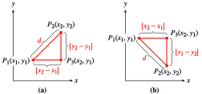
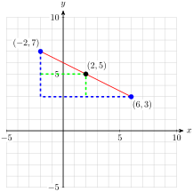
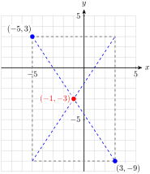
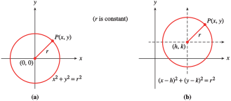
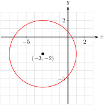
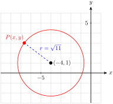
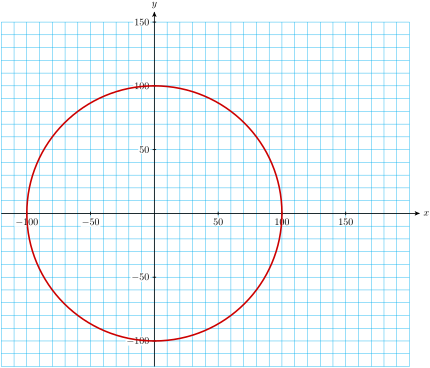

Section 9.2 The Distance and Midpoint Formulas
From straight lines we can build triangles and other polygons. For curves, the simplest figure is a circle, so we’ll consider circles next. You know that a circle is the set of all points in a plane at the same distance from the the center of the circle, so our first task will be to develop a formula for the distance between two points.
Subsection 9.2.1 Distance in a Coordinate Plane
Figure (a) shows a line segment joining the two points \((-2, 7)\) and \((6, 3)\text{.}\) What is the distance between the two points?
Definition.
The distance between two points is the length of the segment joining them.
If we make a right triangle as shown in Figure (b), we can use the Pythagorean theorem to find its length. First, notice that the coordinates at the right angle are \((-2, 3)\text{.}\) We can find the lengths of the two legs of the triangle, because they are horizontal and vertical segments.
\begin{align*}
a\amp= \abs{3-7} = 4\\
b\amp=\abs{6-(-2)}=8
\end{align*}
The segment we want is the hypotenuse of the right triangle, so we apply the Pythagorean theorem.
\begin{align*}
c^2 \amp= a^2+b^2\\
\amp= 4^2+8^2=80\amp\amp \blert{\text{Take square roots.}}\\
c\amp=\sqrt{80}\approx 8.9
\end{align*}
Subsection 9.2.2 The Distance Formula
We can also use the Pythagorean theorem to derive a formula for the distance between any two points, \(P_1\) and \(P_2\text{,}\) in terms of their coordinates. We first label a right triangle, as we did in the discussion above. Draw a horizontal line through \(P_1\) and a vertical line through \(P_2\text{.}\)
These lines meet at a point \(P_3\text{,}\) as shown in the figure below. The \(x\)-coordinate of \(P_3\) is the same as the \(x\)-coordinate of \(P_2\text{,}\) and the \(y\)-coordinate of \(P_3\) is the same as the \(y\)-coordinate of \(P_1\text{.}\) Thus, the coordinates of \(P_3\) are \((x_2, y_1)\text{.}\)

The distance between \(P_1\) and \(P_3\) is \(\abs{x_2-x_1}\) , and the distance between \(P_2\) and \(P_3\) is \(\abs{y_2-y_1} \text{.}\) These two numbers are the lengths of the legs of the right triangle. The length of the hypotenuse is the distance between \(P_1\) and \(P_2\text{,}\) which we’ll call \(d\text{.}\) By the Pythagorean theorem,
\begin{gather*}
d^2 = (x_2 - x_1)^2 + (y_2 - y_1)^2
\end{gather*}
Taking the (positive) square root of each side of this equation gives us the distance formula.
Distance Formula.
The distance \(d\) between points \(P_1(x_1,y_1)\) and \(P_2(x_2,y_2)\) is
\begin{gather*}
\blert{d=\sqrt{(x_2-x_1)^2+(y_2-y_1)^2}}
\end{gather*}
Checkpoint 9.2.1. QuickCheck 1.
Example 9.2.2.
Find the distance between \((2,-1)\) and \((4,3)\text{.}\) \(~\alert{\text{[TK]}}\)
Solution.
Substitute \((2,-1)\) for \((x_1,y_1)\) and \((4,3)\) for \((x_2,y_2)\) in the distance formula to obtain
\begin{align*}
d \amp = \sqrt{(x_2-x_1)^2+(y_2-y_1)^2}\\
\amp = \sqrt{(4-2)^2+\left[3-(-1)\right]^2}\\
\amp = \sqrt{4+16} =\sqrt{20} \approx 4.47
\end{align*}
It doesn’t matter which point we call \(P_1\) and which is \(P_2\text{.}\) We obtain the same answer in the previous Example if we switch the two points and use \((4,3)\) for \(P_1\) and \((2,-1)\) for \(P_2\text{:}\)
\begin{align*}
d \amp = \sqrt{(2-4)^2+[(-1)-3]^2}\\
\amp = \sqrt{4+16} =\sqrt{20}
\end{align*}
Caution 9.2.3.
We cannot simplify \(\sqrt{4+16} \) as \(\sqrt{4}+\sqrt{16} \text{.}\) Remember that \(\sqrt{a^2+b^2}\ne a+b \text{.}\) You can easily see this by observing that
\begin{gather*}
\sqrt{3^2+4^2}=\sqrt{9+16}=\sqrt{5}
\end{gather*}
so it cannot be true that \(\sqrt{3^2+4^2} \) equals \(3+4\text{,}\) or 7. For the same reason, we cannot simplify the distance formula to \((x_2-x_1)+(y_2-y_1)\text{.}\)
Checkpoint 9.2.4. Practice 1.
Graph for Practice 1:

Subsection 9.2.3 The Midpoint Formula
The midpoint of a segment is the point halfway between its endpoints, so that the distance from the midpoint to either endpoint is the same.
The \(x\)-coordinate of the midpoint is halfway between the \(x\)-coordinates of the endpoints, and likewise for the \(y\)-coordinate. For the points \((-2, 7)\) and \((6, 3)\) shown below, the \(x\)-coordinate of the midpoint is \(2\text{,}\) which is halfway between \(-2\) and \(6\text{.}\) The \(y\)-coordinate is halfway between \(7\) and \(3\text{,}\) or \(5\text{.}\) Thus, the midpoint is \((2, 5)\text{.}\)

If we know the coordinates of two points, we can calculate the coordinates of the midpoint. Each coordinate of the midpoint is the average of the corresponding coordinates of the two points.
Midpoint Formula.
The midpoint of the line segment joining the points \(P_1(x_1,y_1)\) and \(P_2(x_2,y_2)\) is the point \(M(\overline{x},\overline{y})\text{,}\) where
\begin{equation*}
\blert{\overline{x}=\dfrac{x_1+x_2}{2}}\qquad\text{ and }\qquad\blert{\overline{y}=\dfrac{y_1+y_2}{2}}
\end{equation*}
Example 9.2.5.
Find the midpoint of the line segment joining the points \((-2,1)\) and \((4,3)\text{.}\)
Solution.
We substitute \((-2,1)\) for \((x_1,y_1)\) and \((4,3)\) for \((x_2,y_2)\) in the midpoint formula to obtain
\begin{align*}
\overline{x}\amp=\dfrac{x_1+x_2}{2}=\dfrac{-2+4}{2}=1\\
\overline{y}\amp=\dfrac{y_1+y_2}{2}=\dfrac{1+3}{2}=2
\end{align*}
The midpoint of the segment is the point \((\overline{x},\overline{y})=(1,2)\text{.}\)
Checkpoint 9.2.6. Practice 2.
Graph for Practice 2:

Subsection 9.2.4 Circles
A circle is the set of all points in a plane that lie at a given distance, called the radius, from a fixed point called the center. We can use the distance formula to find an equation for a circle. First consider the circle in Figure (a), whose center is the origin, \((0,0)\text{.}\)

The distance from the origin to any point \(P(x,y)\) on the circle is \(r\text{.}\) Therefore,
\begin{equation*}
\sqrt{(x-0)^2+(y-0)^2}=r
\end{equation*}
or, squaring both sides,
\begin{equation*}
(x-0)^2+(y-0)^2=r^2
\end{equation*}
Thus, the equation for a circle of radius \(r\) centered at the origin is
\begin{equation*}
\blert{x^2+y^2=r^2}
\end{equation*}
Now consider the circle in Figure (b), whose center is the point \((h,k)\text{.}\) Every point \(P(x,y)\) on the circle lies a distance \(r\) from \((h,k)\text{,}\) so the equation of the circle is given by the following formula.
Standard Form for a Circle.
The equation for a circle of radius \(r\) centered at the point \((h,k)\) is
\begin{equation*}
\blert{(x-h)^2+(y-k)^2=r^2}
\end{equation*}
Example 9.2.7.
Find a point with \(x\)-coordinate \(-3\) that lies on the circle \((x+2)^2+(y-4)^2=5\text{.}\) \(~\alert{\text{[TK]}}\)
Solution.
We substitute \(x=\alert{-3}\) into the equation, and solve for \(y\text{.}\)
\begin{align*}
(\alert{-3}+2)^2+(y-4)^2 \amp = 5 \amp \amp \blert{\text{Simplify.}}\\
(-1)^2 +(y-4)^2 \amp = 5 \amp \amp \blert{\text{Solve by extracting roots.}}\\
(y-4)^2 \amp = 4 \amp \amp \blert{\text{Take square roots.}}\\
y-4 \amp = \pm 2
\end{align*}
We see that the solutions are \(y=6\) and \(y=2\text{.}\) Thus, the points \((-3,6)\) and \((-3,2)\) lie on the circle.
Checkpoint 9.2.8. QuickCheck 3.
It is easy to graph a circle if its equation is given in standard form.
Example 9.2.9.
Graph the circles.
\(\displaystyle (x-2)^2+(y+3)^2=16\)
\(\displaystyle x^2+(y-4)^2=7\)
Solution.
-
The graph of \((x-2)^2+(y+3)^2=16\) is a circle with radius 4 and center at \((2,-3)\text{.}\) To sketch the graph, we first locate the center of the circle. (The center is not part of the graph of the circle.)
From the center, we move a distance of 4 units (the radius of the circle) in each of four directions: up, down, left, and right. This locates four points that lie on the circle: \((2,1)\text{,}\) \((2,-7)\text{,}\) \((-2,-3)\text{,}\) and \((6,-3)\text{.}\) We sketch the circle through these four points.
The graph of \(x^2+(y-4)^2=7\) is a circle with radius \(\sqrt{7}\) and center at \((0,4)\text{.}\) From the center, we move approximately \(\sqrt{7}\text{,}\) or 2.6 units in each of the four coordinate directions to obtain the points \((0,6.6)\text{,}\) \((0,1.4)\text{,}\) \((-2.6,4)\text{,}\) and \((2.6,4)\text{.}\) We sketch the circle through these four points.
Checkpoint 9.2.10. Practice 4.
\((x+3)^2+(y+2)^2=16\)

We can write an equation for any circle if we can find its center and radius.
Example 9.2.11.
Find an equation for the circle whose diameter has endpoints \((7,5)\) and \((1,-1)\text{.}\)
Solution.
The center of the circle is the midpoint of its diameter. We use the midpoint formula to find the center:
\begin{gather*}
h=\overline{x}=\dfrac{7+1}{2}=4\\
k=\overline{y}=\dfrac{5-1}{2}=2
\end{gather*}
Thus, the center is the point \((h,k)=(4,2)\text{.}\)

The radius is the distance from the center to either of the endpoints of the diameter, say the point \((7,5)\text{.}\) We use the distance formula with the points \((7,5)\) and \((4,2)\) to find the radius.
\begin{align*}
r \amp = \sqrt{(7-4)^2+(5-2)^2}\\
\amp = \sqrt{3^2+3^2}=\sqrt{18}
\end{align*}
Finally, we substitute 4 for\(h\) and 2 for \(k\) (the coordinates of the center) and \(\sqrt{18}\) for \(r\) (the radius) into the standard form
\begin{equation*}
(x-h)^2+(y-k)^2=r^2
\end{equation*}
to obtain
\begin{equation*}
(x-4)^2+(y-2)^2=18
\end{equation*}
Checkpoint 9.2.12. Practice 5.
Subsection 9.2.5 General Form for Circles
The equations of circles often appear in a general quadratic form, rather than the standard form described above. For example, we can expand the squares of binomials in part (a) of the previous Example,
\begin{equation*}
(x-2)^2+(y+3)^2=16
\end{equation*}
to obtain
\begin{equation*}
x^2-4x+4+y^2+6y+9=16
\end{equation*}
or
\begin{equation*}
x^2+y^2-4x+6y-3=0
\end{equation*}
This is a quadratic equation in two variables. Such an equation describes a circle if the coefficients of the quadratic, or squared, terms are equal.
Conversely, an equation of the form \(x^2+y^2+ax+by+c=0\) can be converted to standard form by completing the square in both variables. Once this is done, the center and radius of the circle can be determined directly from the equation.
Example 9.2.13.
Write the equation of the circle
\begin{gather*}
x^2+y^2+8x-2y+6=0
\end{gather*}
in standard form, and graph the equation. \(~\alert{\text{[TK]}}\)
Solution.
We prepare to complete the square in both variables by writing the equation as
\begin{equation*}
(x^2+8x+\fillinmath{XXX})+(y^2-2y+\fillinmath{XXX})=-6
\end{equation*}
We complete the square in \(x\) by adding 16 to each side of the equation, and complete the square in \(y\) by adding 1 to each side, to get
\begin{equation*}
(x^2+8x+\alert{16})+(y^2-2y+\alert{1})=-6+\alert{16}+\alert{1}
\end{equation*}
from which we obtain the standard form,
\begin{equation*}
(x+4)^2+(y-1)^2=11
\end{equation*}
Thus, the circle has its center at \((-4,1)\text{,}\) and its radius is \(\sqrt{11}\text{,}\) or approximately 3.3. The graph is shown at right.

Checkpoint 9.2.14. QuickCheck 4.
Checkpoint 9.2.15. Practice 6.
Subsection 9.2.6 Investigation
Investigation 9.2.1. Global Positioning.
The Global Positioning System (GPS) is used by hikers, pilots, surveyors, automobiles to determine their location (latitude, longitude, and elevation) anywhere on the surface of the earth. The system depends on a collection of satellites in orbit around the earth. Each GPS satellite transmits its own position and the current time at regular intervals.
A person with a GPS receiver on earth can calculate his or her distance from the satellite by comparing the time of transmission with the time when it receives the signal. Of course, there are many points at the same distance from the satellite—in fact, the set of all points at a certain distance \(r\) from the satellite lie on a sphere centered at the satellite. That is why there are several satellites: You calculate your position by finding the intersection point of several such spheres centered on different satellites.
We will consider a simplified, two-dimensional model of a GPS system in which the satellites and the receiver all lie in the \(xy\)-plane instead of in three-dimensional space.
In this model we’ll need data from two GPS satellites. The satellites are orbiting along a circle of radius 100 meters centered at the origin. You have a receiver inside that circle and would like to know the coordinates of your position within the circle.

To make the computations simpler, we will also assume that the satellite transmissions travel at 5 meters per second.
A signal from Satellite A arrives 18 seconds after it was transmitted. How far are you from Satellite A?
The signal says that Satellite A was located at \((100, 0)\) at the time of transmission. Use a compass to sketch a graph showing your possible positions relative to Satellite A.
Find an equation for the graph you sketched in part (2).
A signal from Satellite B arrives 8.4 seconds after it was transmitted. How far are you from Satellite B?
The signal says that Satellite B was located at \((28, 96)\) at the time of transmission. Use a compass to sketch a graph showing your possible positions relative to Satellite B.
Find an equation for the graph you sketched in part (5).
Your position must lie at the intersection point, \(P\text{,}\) of your two graphs. Estimate the coordinates of your position from the graph. (Remember that you are within the orbits of the satellites.)
Later in this chapter you will learn how to find the coordinates of \(P\) algebraically by solving a system of equations. Verify that the ordered pairs \((28, 54)\) and \((68.32, 84.24)\) both satisfy the equations you wrote in part (3) and part (6). What are the coordinates of \(P\text{?}\)
Exercises 9.2.7 Problem Set 9.2
Warm Up
1.
Choose values for \(x\) and \(y\) to decide whether the statements are true.
\(\displaystyle \sqrt{x^2+y^2}=x+y\)
\(\displaystyle (x+y)^2 = x^2+y^2\)
2.
Leanne is sailing 3 miles west and 5 miles south of the harbor. She heads directly towards an island that is 8 miles west and 7 miles north of the harbor.
How far is Leanne from the island?
How far will Leanne be from the harbor when she is halfway to the island?
Exercise Group.
For Problems 3 and 4, complete the table of values, then sketch the graph.
3.
| \(x\) |
\(-4\) |
\(-3\) |
\(-2\) |
\(-1\) |
\(0\) |
\(1\) |
\(2\) |
\(3\) |
\(4\) |
| \(y\) |
\(\qquad\) |
\(\qquad\) |
\(\qquad\) |
\(\qquad\) |
\(\qquad\) |
\(\qquad\) |
\(\qquad\) |
\(\qquad\) |
\(\qquad\) |
4.
| \(x\) |
\(-1\) |
\(0\) |
\(1\) |
\(2\) |
\(3\) |
\(4\) |
\(5\) |
| \(y\) |
\(\qquad\) |
\(\qquad\) |
\(\qquad\) |
\(\qquad\) |
\(\qquad\) |
\(\qquad\) |
\(\qquad\) |
Exercise Group.
For Problems 5 and 6, solve by completing the square.
5.
\(x^2-5x-2=0\)
6.
\(x^2+6x=11 \)
Skills Practice
Exercise Group.
For Problems 7–10, find the distance between each of the given pairs of points, and find the midpoint of the segment joining them.
7.
\((2,-3) \text{,}\) \((-2,-1) \)
8.
\((1,1) \text{,}\) \((4,5) \)
9.
\((-2,-5) \text{,}\) \((-2,3) \)
10.
\((5,-4) \text{,}\) \((-1,1) \)
Exercise Group.
For Problems 11–14, state the center and radius of the circle.
11.
\(2x^2+2y^2=50\)
12.
\(x^2+y^2=16 \)
13.
\((x+3)^2+y^2=10 \)
14.
\((x-4)^2+(y+2)^2=9 \)
Applications
15.
Find the perimeter of the triangle with vertices \((-1,5)\text{,}\) \((8,-7)\text{,}\) \((4,1)\text{.}\) (Hint: The length of a side is the distance between its endpoints.)
16.
Show that the points \((-2,1)\text{,}\) \((0,-1) \text{,}\) and \((\sqrt{3}-1, \sqrt{3}) \) are the vertices of an equilateral triangle. (Hint: Use the distance formula to show that the lengths of the three sides are equal.)
17.
The points \((1,6)\text{,}\) \((5,2)\text{,}\) \((-2,3)\text{,}\) and \((2,-1)\) are the vertices of a quadrilateral. Show that its diagonals are of equal length.
18.
Two opposite vertices of a square are \(A(-9,-5)\) and \(C(3,3)\text{.}\)
Find the length of a diagonal of the square.
Find the length of the side of the square.
19.
Find the equation of the perpendicular bisector of the line segment joining \(A(2,1)\) and \(B(1,3)\text{.}\)
20.
Brie took off from Oldfield Airport in a small plane and is now 253 miles east and 124 miles north of the airport. She knows that Preston Airport is 187 miles east and 201 miles south of Oldfield Airport. Which airport is closer to Brie’s present location?
-
Use the diagram and the Pythagorean theorem to find the distance from Brie’s position to Oldfield Airport.
Use the diagram and the distance formula to find the distance from Brie’s position to Preston Airport.
Answer the question in the problem.
21.
Suppose that Brie flies from her present position at \((253, 124)\) towards Preston Airport at \((187,-201)\text{.}\)
-
What are her coordinates when she is halfway to Preston?
Show that the distance from Brie’s present position to the halfway point is the same as the distance from the halfway point to Preston Airport.
Exercise Group.
For Problems 22-27, graph the equation.
22.
\(x^2+y^2=25\)
23.
\(4x^2+4y^2=16\)
24.
\((x-4)^2+(y+2)^2=9\)
25.
\((x+3)^2+y^2=10\)
26.
\((x-1)^2+(y-3)^2=16\)
27.
\(x^2+(y+4)^2=12\)
Exercise Group.
For Problems 28–31, write the equation in standard form. State the center and radius of the circle
28.
\(x^2+y^2+2x-4y-6=0\)
29.
\(x^2+y^2+8x=4\)
30.
\(x^2+y^2-6x+2y-4=0\)
31.
\(x^2+y^2-10y=2\)
Exercise Group.
For Problems 32–35, write an equation for the circle with the given properties.
32.
Center at \((-2,5) \text{,}\) radius \(2\sqrt{3} \text{.}\)
33.
Center at \(\left(\dfrac{3}{2},-4\right) \text{,}\) one point on the circle is \((4,-3) \text{.}\)
34.
Endpoints of a diameter at \((1,5)\) and \((3,-1).\)
35.
Center at \((-3,-1)\text{,}\) the \(x\)-axis is tangent to the circle.
36.
Find an equation for the circle that passes through the points \((2,3),~(3,2)\text{,}\) and \((-4,-5)\text{.}\) (Hint: Find values for \(a, ~b\text{,}\) and \(c\) so that the three points lie on the graph of \(x^2+y^2+ax+by+c=0\text{.}\))